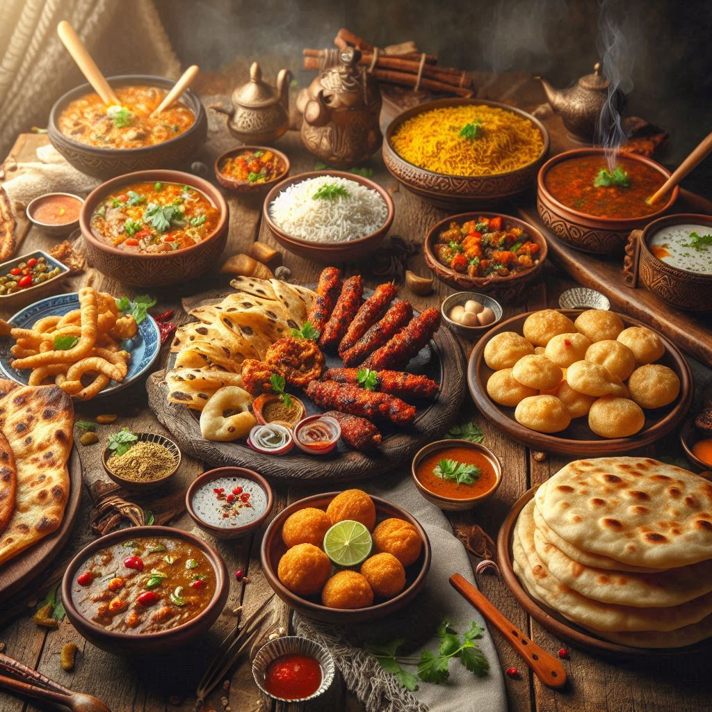
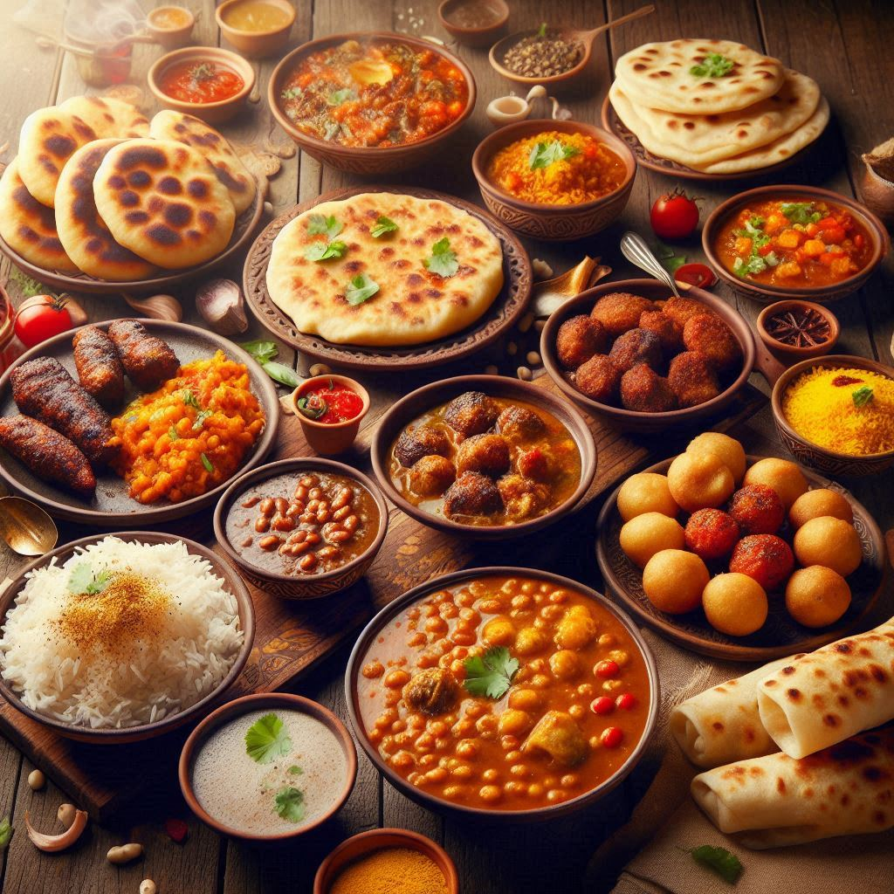

Uttar Pradesh boasts a rich and diverse culinary heritage, influenced by its historical significance, regional variations, and cultural diversity. Here’s an overview of some key aspects of the food culture in the state:
1. Awadhi Cuisine
- Biryanis: Lucknow, the heart of Awadhi cuisine, is famous for its flavorful biryanis, particularly Awadhi Biryani and Kacchi Biryani. These dishes are made with marinated meat and fragrant basmati rice, slow-cooked to perfection.
- Kebabs: Awadhi kebabs are renowned for their tenderness and taste. Notable varieties include Galouti Kebabs (made from minced meat) and Tunday Kababi, famous for its melt-in-the-mouth texture.
2. Street Food
- Chaat: UP is famous for its chaat varieties, such as Aloo Tikki Chaat, Pani Puri, and Bhel Puri. These are often found at roadside stalls and are characterized by their spicy, tangy flavors.
- Lassi: Especially popular in Varanasi and Agra, this creamy yogurt drink is often flavored with fruits or spices and is a refreshing accompaniment to meals.
3. Vegetarian Delicacies
- Dal: Various lentil dishes are staples, including Dal Makhani and Tadka Dal, often served with rice or roti.
- Sabzi: A wide range of vegetable dishes, often cooked with spices, ghee, and herbs, are served. Aloo Gobi (potatoes and cauliflower) and Bhindi Masala (okra) are popular choices.
- Kofta: Made from various vegetables or paneer (cottage cheese), koftas are often served in rich, creamy gravies.
4. Sweets and Desserts
- Kheer: A rice pudding made with milk, sugar, and flavored with cardamom and nuts, kheer is a popular festive dessert.
- Jalebi: This sweet is made from deep-fried batter soaked in sugar syrup, enjoyed hot and crispy.
- Peda: A milk-based sweet, often flavored with cardamom and garnished with nuts, is commonly prepared during festivals.


5. Beverages
- Chai: Tea is an integral part of daily life in UP, often prepared with milk and spices. Street vendors serve it in small cups, enjoyed by locals throughout the day.
- Thandai: A traditional drink made with milk, nuts, and spices, often served during festivals like Holi.
6. Regional Variations
- Braj Cuisine: In the Mathura-Vrindavan region, dishes like Makhan Mishri (butter and sugar) are popular, celebrating Lord Krishna's love for butter.
- Bihari Influence: In eastern UP, you may find dishes influenced by Bihari cuisine, such as Litti Chokha (baked wheat balls with mashed vegetables).
7. Festive Foods
- Pitha: Special rice cakes are made during festivals, often filled with sweet or savory fillings, showcasing regional culinary traditions.
- Sweets during Eid: During Eid, special sweets like Sheer Khurma (a rich vermicelli pudding) are prepared, symbolizing celebration and sharing.
Conclusion
The food of Uttar Pradesh is a delightful blend of flavors, textures, and traditions, reflecting the state's rich cultural tapestry. From street food to royal feasts, the culinary landscape offers something for everyone, making it a significant part of UP's identity. Whether savoring spicy kebabs or indulging in sweet delicacies, the diverse cuisine is sure to leave a lasting impression on anyone who visits.